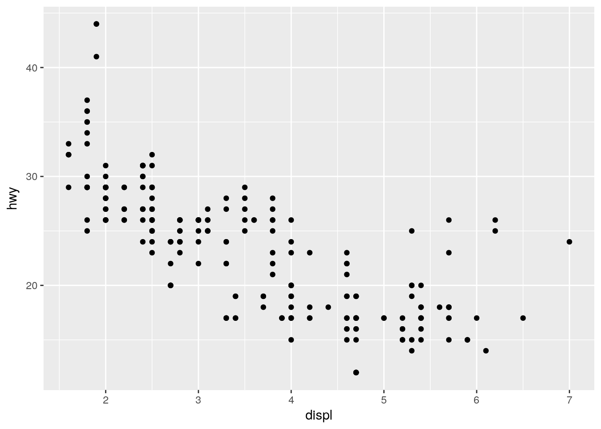

---
title: "Test document"
author: "Kirill Müller"
date: "October 17, 2017"
output: html_document
---
```{r setup, include=FALSE}
knitr::opts_chunk$set(echo = FALSE)
library(tidyverse)
```
# Introduction
We will be reviewing a dataset of `r nrow(mpg)` cars. The dataset is listed below.
```{r}
mpg
```
## Relationship between engine displacement and highway mileage
The plot below should *not* surprise us: The larger the engine, the more energy it consumes per distance driven (in $\frac{\text{J}}{\text{km}}$), the less is the mileage per unit of gasoline (in $\frac{\text{miles}}{\text{gallon}}$).
```{r}
ggplot(mpg, aes(displ, hwy)) +
geom_point()
```
Possible reasons why people would choose a larger engine include:
- ...
- ...
- ...We will be reviewing a dataset of 234 cars. The dataset is listed below.
mpg## # A tibble: 234 x 11
## manufacturer model displ year cyl trans drv cty hwy
## <chr> <chr> <dbl> <int> <int> <chr> <chr> <int> <int>
## 1 audi a4 1.8 1999 4 auto(l5) f 18 29
## 2 audi a4 1.8 1999 4 manual(m5) f 21 29
## 3 audi a4 2.0 2008 4 manual(m6) f 20 31
## 4 audi a4 2.0 2008 4 auto(av) f 21 30
## 5 audi a4 2.8 1999 6 auto(l5) f 16 26
## 6 audi a4 2.8 1999 6 manual(m5) f 18 26
## 7 audi a4 3.1 2008 6 auto(av) f 18 27
## 8 audi a4 quattro 1.8 1999 4 manual(m5) 4 18 26
## 9 audi a4 quattro 1.8 1999 4 auto(l5) 4 16 25
## 10 audi a4 quattro 2.0 2008 4 manual(m6) 4 20 28
## # ... with 224 more rows, and 2 more variables: fl <chr>, class <chr>The plot below should not surprise us: The larger the engine, the more energy it consumes per distance driven (in \(\frac{\text{J}}{\text{km}}\)), the less is the mileage per unit of gasoline (in \(\frac{\text{miles}}{\text{gallon}}\)).
ggplot(mpg, aes(displ, hwy)) +
geom_point()
Possible reasons why people would choose a larger engine include:
Copyright © 2017 Kirill Müller. Licensed under CC BY-NC 4.0.